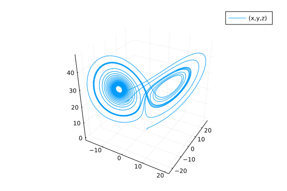
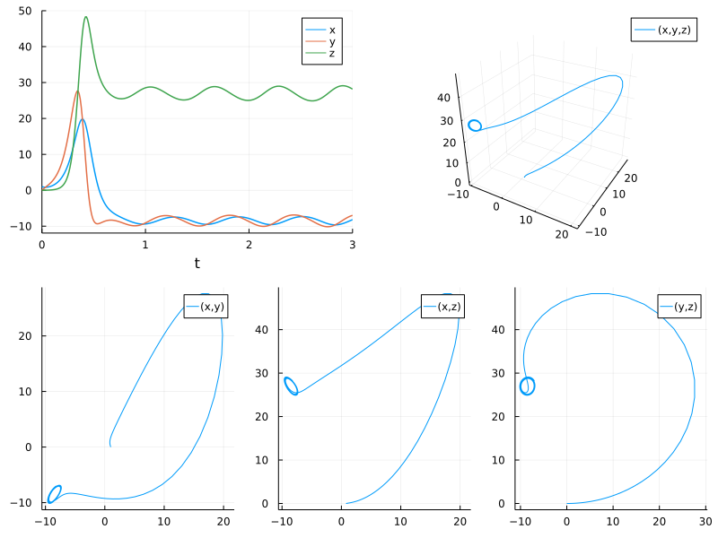
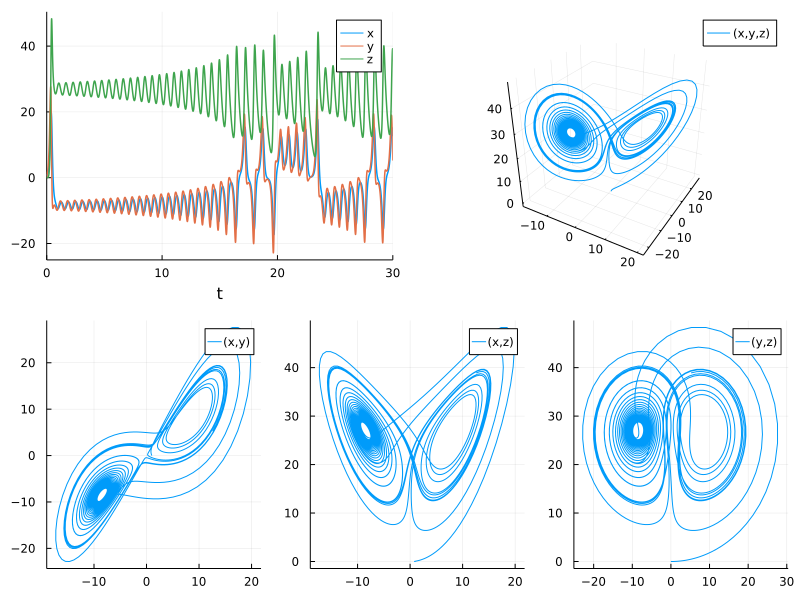

Lorenz Parameter Estimation Benchmarks
Estimate the parameters of the Lorenz system from the dataset
Note: If data is generated with a fixed time step method and then is tested against with the same time step, there is a biased introduced since it's no longer about hitting the true solution, rather it's just about retreiving the same values that the ODE was first generated by! Thus this version uses adaptive timestepping for all portions so that way tests are against the true solution.
using ParameterizedFunctions, OrdinaryDiffEq, DiffEqParamEstim
using BlackBoxOptim, NLopt, Plots, QuadDIRECT
gr(fmt=:png)Plots.GRBackend()Xiang2015Bounds = Tuple{Float64, Float64}[(9, 11), (20, 30), (2, 3)] # for local optimizations
xlow_bounds = [9.0,20.0,2.0]
xhigh_bounds = [11.0,30.0,3.0]
LooserBounds = Tuple{Float64, Float64}[(0, 22), (0, 60), (0, 6)] # for global optimization
GloIniPar = [0.0, 0.5, 0.1] # for global optimizations
LocIniPar = [9.0, 20.0, 2.0] # for local optimization3-element Vector{Float64}:
9.0
20.0
2.0g1 = @ode_def LorenzExample begin
dx = σ*(y-x)
dy = x*(ρ-z) - y
dz = x*y - β*z
end σ ρ β
p = [10.0,28.0,2.66] # Parameters used to construct the dataset
r0 = [1.0; 0.0; 0.0] #[-11.8,-5.1,37.5] PODES Initial values of the system in space # [0.1, 0.0, 0.0]
tspan = (0.0, 30.0) # PODES sample of 3000 observations over the (0,30) timespan
prob = ODEProblem(g1, r0, tspan,p)
tspan2 = (0.0, 3.0) # Xiang test sample of 300 observations with a timestep of 0.01
prob_short = ODEProblem(g1, r0, tspan2,p)ODEProblem with uType Vector{Float64} and tType Float64. In-place: true
timespan: (0.0, 3.0)
u0: 3-element Vector{Float64}:
1.0
0.0
0.0dt = 30.0/3000
tf = 30.0
tinterval = 0:dt:tf
t = collect(tinterval)3001-element Vector{Float64}:
0.0
0.01
0.02
0.03
0.04
0.05
0.06
0.07
0.08
0.09
⋮
29.92
29.93
29.94
29.95
29.96
29.97
29.98
29.99
30.0h = 0.01
M = 300
tstart = 0.0
tstop = tstart + M * h
tinterval_short = 0:h:tstop
t_short = collect(tinterval_short)301-element Vector{Float64}:
0.0
0.01
0.02
0.03
0.04
0.05
0.06
0.07
0.08
0.09
⋮
2.92
2.93
2.94
2.95
2.96
2.97
2.98
2.99
3.0# Generate Data
data_sol_short = solve(prob_short,Vern9(),saveat=t_short,reltol=1e-9,abstol=1e-9)
data_short = convert(Array, data_sol_short) # This operation produces column major dataset obs as columns, equations as rows
data_sol = solve(prob,Vern9(),saveat=t,reltol=1e-9,abstol=1e-9)
data = convert(Array, data_sol)3×3001 Matrix{Float64}:
1.0 0.917924 0.867919 0.84536 … 13.8987 13.2896 12.5913
0.0 0.26634 0.51174 0.744654 8.31875 6.7199 5.22868
0.0 0.00126393 0.00465567 0.00983655 39.19 39.1699 38.904Plot the data
plot(data_sol_short,vars=(1,2,3)) # the short solution
plot(data_sol,vars=(1,2,3)) # the longer solution
interpolation_sol = solve(prob,Vern7(),saveat=t,reltol=1e-12,abstol=1e-12)
plot(interpolation_sol,vars=(1,2,3))
xyzt = plot(data_sol_short, plotdensity=10000,lw=1.5)
xy = plot(data_sol_short, plotdensity=10000, vars=(1,2))
xz = plot(data_sol_short, plotdensity=10000, vars=(1,3))
yz = plot(data_sol_short, plotdensity=10000, vars=(2,3))
xyz = plot(data_sol_short, plotdensity=10000, vars=(1,2,3))
plot(plot(xyzt,xyz),plot(xy, xz, yz, layout=(1,3),w=1), layout=(2,1), size=(800,600))
xyzt = plot(data_sol, plotdensity=10000,lw=1.5)
xy = plot(data_sol, plotdensity=10000, vars=(1,2))
xz = plot(data_sol, plotdensity=10000, vars=(1,3))
yz = plot(data_sol, plotdensity=10000, vars=(2,3))
xyz = plot(data_sol, plotdensity=10000, vars=(1,2,3))
plot(plot(xyzt,xyz),plot(xy, xz, yz, layout=(1,3),w=1), layout=(2,1), size=(800,600))
Find a local solution for the three parameters from a short data set
obj_short = build_loss_objective(prob_short,Tsit5(),L2Loss(t_short,data_short),tstops=t_short)
res1 = bboptimize(obj_short;SearchRange = LooserBounds, MaxSteps = 7e3)
# Tolernace is still too high to get close enoughStarting optimization with optimizer BlackBoxOptim.DiffEvoOpt{BlackBoxOptim
.FitPopulation{Float64}, BlackBoxOptim.RadiusLimitedSelector, BlackBoxOptim
.AdaptiveDiffEvoRandBin{3}, BlackBoxOptim.RandomBound{BlackBoxOptim.Continu
ousRectSearchSpace}}
0.00 secs, 0 evals, 0 steps
0.50 secs, 3243 evals, 3151 steps, improv/step: 0.295 (last = 0.2951), fitn
ess=0.021918473
1.00 secs, 6823 evals, 6732 steps, improv/step: 0.294 (last = 0.2935), fitn
ess=0.000000002
Optimization stopped after 7001 steps and 1.08 seconds
Termination reason: Max number of steps (7000) reached
Steps per second = 6504.20
Function evals per second = 6588.74
Improvements/step = 0.29257
Total function evaluations = 7092
Best candidate found: [10.0, 28.0, 2.66]
Fitness: 0.000000000
BlackBoxOptim.OptimizationResults("adaptive_de_rand_1_bin_radiuslimited", "
Max number of steps (7000) reached", 7001, 1.660972348754049e9, 1.076381921
7681885, BlackBoxOptim.ParamsDictChain[BlackBoxOptim.ParamsDictChain[Dict{S
ymbol, Any}(:RngSeed => 510081, :SearchRange => [(0.0, 22.0), (0.0, 60.0),
(0.0, 6.0)], :MaxSteps => 7000),Dict{Symbol, Any}()],Dict{Symbol, Any}(:Cal
lbackInterval => -1.0, :TargetFitness => nothing, :TraceMode => :compact, :
FitnessScheme => BlackBoxOptim.ScalarFitnessScheme{true}(), :MinDeltaFitnes
sTolerance => 1.0e-50, :NumDimensions => :NotSpecified, :FitnessTolerance =
> 1.0e-8, :TraceInterval => 0.5, :MaxStepsWithoutProgress => 10000, :MaxSte
ps => 10000…)], 7092, BlackBoxOptim.ScalarFitnessScheme{true}(), BlackBoxOp
tim.TopListArchiveOutput{Float64, Vector{Float64}}(3.731478320530698e-10, [
9.999999127454137, 28.00000057466176, 2.659999992795556]), BlackBoxOptim.Po
pulationOptimizerOutput{BlackBoxOptim.FitPopulation{Float64}}(BlackBoxOptim
.FitPopulation{Float64}([10.000005972738371 10.000000163630402 … 10.0000020
76843517 9.999993329887959; 27.99999934842646 27.999997631400948 … 27.99999
9334058128 28.000000935517296; 2.66000045301577 2.660000312223643 … 2.66000
07082511317 2.6599994138671463], NaN, [1.2387335967874631e-8, 7.07357542718
1811e-9, 1.784091616218387e-8, 4.222509016151087e-9, 4.45654417926778e-9, 4
.3609869135492806e-9, 7.051297555344949e-9, 2.4081909629780014e-9, 8.590577
19374221e-9, 4.222509016151087e-9 … 3.846581835006852e-9, 2.5900835608070
188e-8, 1.4341285631360928e-8, 1.1803471387196822e-8, 1.0259702242556803e-8
, 7.125852709478684e-9, 2.1151984839241364e-8, 1.4132648955297198e-8, 1.144
605858667092e-8, 1.2367706967109202e-8], 0, BlackBoxOptim.Candidate{Float64
}[BlackBoxOptim.Candidate{Float64}([10.000002312704874, 27.999999605306527,
2.660000059878631], 18, 2.1646536920064817e-9, BlackBoxOptim.AdaptiveDiffE
voRandBin{3}(BlackBoxOptim.AdaptiveDiffEvoParameters(BlackBoxOptim.BimodalC
auchy(Distributions.Cauchy{Float64}(μ=0.65, σ=0.1), Distributions.Cauchy{Fl
oat64}(μ=1.0, σ=0.1), 0.5, false, true), BlackBoxOptim.BimodalCauchy(Distri
butions.Cauchy{Float64}(μ=0.1, σ=0.1), Distributions.Cauchy{Float64}(μ=0.95
, σ=0.1), 0.5, false, true), [0.9747970422406012, 0.6425639263909486, 0.696
661382997851, 0.4815173336301414, 0.6830096334941048, 0.6941168702203365, 0
.5744015587386342, 0.5900659604535065, 1.0, 0.9837164750331152 … 0.709801
7129808624, 0.7398773158209411, 1.0, 0.30284011145101, 0.8310513691909017,
0.48605789677652794, 1.0, 0.5322125909115555, 0.7005097231823842, 0.8025552
351442915], [1.0, 0.8483794290573982, 0.7455776015284026, 0.039536671562364
484, 0.07103621922355824, 0.6135564128647559, 0.8760734819625422, 1.0, 0.92
13473571310884, 0.9065794063924125 … 0.10128684792856077, 0.8389385705433
091, 0.1437888649718475, 1.0, 0.4398009612708157, 1.0, 1.0, 0.9698051297101
729, 0.9139506367512783, 0.01661950740571222])), 0), BlackBoxOptim.Candidat
e{Float64}([10.000005819739226, 27.999997581880518, 2.6600007962537773], 18
, 1.655555659772375e-8, BlackBoxOptim.AdaptiveDiffEvoRandBin{3}(BlackBoxOpt
im.AdaptiveDiffEvoParameters(BlackBoxOptim.BimodalCauchy(Distributions.Cauc
hy{Float64}(μ=0.65, σ=0.1), Distributions.Cauchy{Float64}(μ=1.0, σ=0.1), 0.
5, false, true), BlackBoxOptim.BimodalCauchy(Distributions.Cauchy{Float64}(
μ=0.1, σ=0.1), Distributions.Cauchy{Float64}(μ=0.95, σ=0.1), 0.5, false, tr
ue), [0.9747970422406012, 0.6425639263909486, 0.696661382997851, 0.48151733
36301414, 0.6830096334941048, 0.6941168702203365, 0.5744015587386342, 0.590
0659604535065, 1.0, 0.9837164750331152 … 0.7098017129808624, 0.7398773158
209411, 1.0, 0.30284011145101, 0.8310513691909017, 0.48605789677652794, 1.0
, 0.5322125909115555, 0.7005097231823842, 0.8025552351442915], [1.0, 0.8483
794290573982, 0.7455776015284026, 0.039536671562364484, 0.07103621922355824
, 0.6135564128647559, 0.8760734819625422, 1.0, 0.9213473571310884, 0.906579
4063924125 … 0.10128684792856077, 0.8389385705433091, 0.1437888649718475,
1.0, 0.4398009612708157, 1.0, 1.0, 0.9698051297101729, 0.9139506367512783,
0.01661950740571222])), 0)], Base.Threads.SpinLock(0))))obj_short = build_loss_objective(prob_short,Tsit5(),L2Loss(t_short,data_short),tstops=t_short,reltol=1e-9)
res1 = bboptimize(obj_short;SearchRange = LooserBounds, MaxSteps = 7e3)
# With the tolerance lower, it achieves the correct solution in 3.5 seconds.Starting optimization with optimizer BlackBoxOptim.DiffEvoOpt{BlackBoxOptim
.FitPopulation{Float64}, BlackBoxOptim.RadiusLimitedSelector, BlackBoxOptim
.AdaptiveDiffEvoRandBin{3}, BlackBoxOptim.RandomBound{BlackBoxOptim.Continu
ousRectSearchSpace}}
0.00 secs, 0 evals, 0 steps
0.50 secs, 2182 evals, 2070 steps, improv/step: 0.300 (last = 0.2995), fitn
ess=0.247111903
1.00 secs, 4575 evals, 4465 steps, improv/step: 0.301 (last = 0.3027), fitn
ess=0.000001791
1.50 secs, 6810 evals, 6700 steps, improv/step: 0.301 (last = 0.3002), fitn
ess=0.000000000
Optimization stopped after 7001 steps and 1.56 seconds
Termination reason: Max number of steps (7000) reached
Steps per second = 4482.95
Function evals per second = 4553.39
Improvements/step = 0.30200
Total function evaluations = 7111
Best candidate found: [10.0, 28.0, 2.66]
Fitness: 0.000000000
BlackBoxOptim.OptimizationResults("adaptive_de_rand_1_bin_radiuslimited", "
Max number of steps (7000) reached", 7001, 1.660972350929758e9, 1.561693906
7840576, BlackBoxOptim.ParamsDictChain[BlackBoxOptim.ParamsDictChain[Dict{S
ymbol, Any}(:RngSeed => 120374, :SearchRange => [(0.0, 22.0), (0.0, 60.0),
(0.0, 6.0)], :MaxSteps => 7000),Dict{Symbol, Any}()],Dict{Symbol, Any}(:Cal
lbackInterval => -1.0, :TargetFitness => nothing, :TraceMode => :compact, :
FitnessScheme => BlackBoxOptim.ScalarFitnessScheme{true}(), :MinDeltaFitnes
sTolerance => 1.0e-50, :NumDimensions => :NotSpecified, :FitnessTolerance =
> 1.0e-8, :TraceInterval => 0.5, :MaxStepsWithoutProgress => 10000, :MaxSte
ps => 10000…)], 7111, BlackBoxOptim.ScalarFitnessScheme{true}(), BlackBoxOp
tim.TopListArchiveOutput{Float64, Vector{Float64}}(6.942160218532226e-12, [
9.999999937437192, 28.00000006217535, 2.6600000067483154]), BlackBoxOptim.P
opulationOptimizerOutput{BlackBoxOptim.FitPopulation{Float64}}(BlackBoxOpti
m.FitPopulation{Float64}([9.999998878972765 10.000000348517688 … 10.0000013
46067682 10.000000076032194; 28.000000566333696 28.000000471250775 … 27.999
999450090616 27.99999965840535; 2.65999984082859 2.660000055439699 … 2.6600
00106419734 2.660000035293181], NaN, [5.660077288901273e-10, 3.679103703098
3137e-10, 1.7430719406615654e-9, 2.9893491639080196e-9, 1.4594959641477294e
-10, 4.045592789369091e-10, 3.3742103682345655e-10, 9.90500608826793e-10, 1
.1871638389643885e-9, 4.5443844405499315e-9 … 1.9418442030057718e-9, 5.00
2815239231213e-9, 4.1788041283298625e-9, 1.1246412050632688e-9, 1.963604339
399019e-10, 7.894512202536879e-10, 7.152062857339359e-10, 1.564119548775854
6e-9, 5.607225043600761e-10, 1.1293500540136479e-10], 0, BlackBoxOptim.Cand
idate{Float64}[BlackBoxOptim.Candidate{Float64}([9.999999136971992, 28.0000
00182593013, 2.6599999899709923], 33, 2.5760585398456905e-10, BlackBoxOptim
.AdaptiveDiffEvoRandBin{3}(BlackBoxOptim.AdaptiveDiffEvoParameters(BlackBox
Optim.BimodalCauchy(Distributions.Cauchy{Float64}(μ=0.65, σ=0.1), Distribut
ions.Cauchy{Float64}(μ=1.0, σ=0.1), 0.5, false, true), BlackBoxOptim.Bimoda
lCauchy(Distributions.Cauchy{Float64}(μ=0.1, σ=0.1), Distributions.Cauchy{F
loat64}(μ=0.95, σ=0.1), 0.5, false, true), [1.0, 1.0, 1.0, 0.55820053873943
54, 0.7414541682095882, 0.5523040775505761, 0.64318053599656, 0.96523483404
18305, 1.0, 1.0 … 0.8243732537750977, 1.0, 0.6776924046204582, 0.60826664
60645193, 0.4529325438072056, 0.20680494982941128, 0.6073891383144715, 0.63
45656495954465, 0.9632447204216013, 0.8126741274936952], [1.0, 0.1735031833
7965387, 0.08754482284934809, 0.04488882460859409, 0.0037871081305914933, 0
.928868753500526, 0.9778451861695486, 0.9777936711207896, 0.094087019479379
42, 0.3099021665348699 … 0.060412639659798595, 0.8860174977701932, 0.1288
854892881057, 0.1138272727167663, 0.11579224961161168, 0.3762842131869806,
1.0, 0.07618639107816444, 1.0, 0.08652682531223346])), 0), BlackBoxOptim.Ca
ndidate{Float64}([9.999997817697857, 28.000000751232772, 2.6599999571158177
], 33, 1.604210818697905e-9, BlackBoxOptim.AdaptiveDiffEvoRandBin{3}(BlackB
oxOptim.AdaptiveDiffEvoParameters(BlackBoxOptim.BimodalCauchy(Distributions
.Cauchy{Float64}(μ=0.65, σ=0.1), Distributions.Cauchy{Float64}(μ=1.0, σ=0.1
), 0.5, false, true), BlackBoxOptim.BimodalCauchy(Distributions.Cauchy{Floa
t64}(μ=0.1, σ=0.1), Distributions.Cauchy{Float64}(μ=0.95, σ=0.1), 0.5, fals
e, true), [1.0, 1.0, 1.0, 0.5582005387394354, 0.7414541682095882, 0.5523040
775505761, 0.64318053599656, 0.9652348340418305, 1.0, 1.0 … 0.82437325377
50977, 1.0, 0.6776924046204582, 0.6082666460645193, 0.4529325438072056, 0.2
0680494982941128, 0.6073891383144715, 0.6345656495954465, 0.963244720421601
3, 0.8126741274936952], [1.0, 0.17350318337965387, 0.08754482284934809, 0.0
4488882460859409, 0.0037871081305914933, 0.928868753500526, 0.9778451861695
486, 0.9777936711207896, 0.09408701947937942, 0.3099021665348699 … 0.0604
12639659798595, 0.8860174977701932, 0.1288854892881057, 0.1138272727167663,
0.11579224961161168, 0.3762842131869806, 1.0, 0.07618639107816444, 1.0, 0.
08652682531223346])), 0)], Base.Threads.SpinLock(0))))obj_short = build_loss_objective(prob_short,Vern9(),L2Loss(t_short,data_short),tstops=t_short,reltol=1e-9,abstol=1e-9)
res1 = bboptimize(obj_short;SearchRange = LooserBounds, MaxSteps = 7e3)
# With the more accurate solver Vern9 in the solution of the ODE, the convergence is less efficient!
# Fastest BlackBoxOptim: 3.5 secondsStarting optimization with optimizer BlackBoxOptim.DiffEvoOpt{BlackBoxOptim
.FitPopulation{Float64}, BlackBoxOptim.RadiusLimitedSelector, BlackBoxOptim
.AdaptiveDiffEvoRandBin{3}, BlackBoxOptim.RandomBound{BlackBoxOptim.Continu
ousRectSearchSpace}}
0.00 secs, 0 evals, 0 steps
0.50 secs, 2483 evals, 2339 steps, improv/step: 0.294 (last = 0.2941), fitn
ess=0.011357369
1.00 secs, 4655 evals, 4511 steps, improv/step: 0.287 (last = 0.2795), fitn
ess=0.000004336
1.50 secs, 7140 evals, 6997 steps, improv/step: 0.291 (last = 0.2981), fitn
ess=0.000000000
Optimization stopped after 7001 steps and 1.50 seconds
Termination reason: Max number of steps (7000) reached
Steps per second = 4663.70
Function evals per second = 4758.96
Improvements/step = 0.29129
Total function evaluations = 7144
Best candidate found: [10.0, 28.0, 2.66]
Fitness: 0.000000000
BlackBoxOptim.OptimizationResults("adaptive_de_rand_1_bin_radiuslimited", "
Max number of steps (7000) reached", 7001, 1.66097236376591e9, 1.5011670589
447021, BlackBoxOptim.ParamsDictChain[BlackBoxOptim.ParamsDictChain[Dict{Sy
mbol, Any}(:RngSeed => 732405, :SearchRange => [(0.0, 22.0), (0.0, 60.0), (
0.0, 6.0)], :MaxSteps => 7000),Dict{Symbol, Any}()],Dict{Symbol, Any}(:Call
backInterval => -1.0, :TargetFitness => nothing, :TraceMode => :compact, :F
itnessScheme => BlackBoxOptim.ScalarFitnessScheme{true}(), :MinDeltaFitness
Tolerance => 1.0e-50, :NumDimensions => :NotSpecified, :FitnessTolerance =>
1.0e-8, :TraceInterval => 0.5, :MaxStepsWithoutProgress => 10000, :MaxStep
s => 10000…)], 7144, BlackBoxOptim.ScalarFitnessScheme{true}(), BlackBoxOpt
im.TopListArchiveOutput{Float64, Vector{Float64}}(3.1721900395542534e-10, [
9.999998966284732, 28.000000237846447, 2.6599999089075927]), BlackBoxOptim.
PopulationOptimizerOutput{BlackBoxOptim.FitPopulation{Float64}}(BlackBoxOpt
im.FitPopulation{Float64}([9.999998966284732 9.999999383645408 … 10.0000030
0181217 10.000001500250727; 28.000000237846447 28.00000067137862 … 27.99999
9342097464 28.00000061029504; 2.6599999089075927 2.6599998501012636 … 2.660
000026458712 2.6600000076089807], NaN, [3.1721900395542534e-10, 5.866539820
574927e-10, 5.208886947089265e-10, 3.0544064177751135e-9, 1.056739498381354
e-9, 5.481783189928553e-9, 5.020471000436757e-9, 4.646201662431383e-9, 9.30
8415069899506e-10, 1.2617208308835803e-9 … 2.1780297126557505e-9, 6.21712
6165688513e-10, 9.029501821628856e-10, 1.3010691432743014e-9, 1.10318501714
98881e-9, 4.111692272632602e-9, 3.5426510610831425e-10, 1.634496357308958e-
9, 3.214519783195727e-9, 1.615571449777142e-9], 0, BlackBoxOptim.Candidate{
Float64}[BlackBoxOptim.Candidate{Float64}([10.000002054881515, 28.000001048
386274, 2.6599999616789076], 21, 3.83049335496282e-9, BlackBoxOptim.Adaptiv
eDiffEvoRandBin{3}(BlackBoxOptim.AdaptiveDiffEvoParameters(BlackBoxOptim.Bi
modalCauchy(Distributions.Cauchy{Float64}(μ=0.65, σ=0.1), Distributions.Cau
chy{Float64}(μ=1.0, σ=0.1), 0.5, false, true), BlackBoxOptim.BimodalCauchy(
Distributions.Cauchy{Float64}(μ=0.1, σ=0.1), Distributions.Cauchy{Float64}(
μ=0.95, σ=0.1), 0.5, false, true), [0.4829963793634816, 1.0, 0.677639750486
6081, 1.0, 0.8246309634955343, 0.660044057393315, 0.18355947700993458, 1.0,
0.5850019907348274, 0.7147304112938735 … 0.6293417663071164, 0.431637183
7232358, 1.0, 0.9418476008886798, 0.7754375886124951, 0.2346066464390152, 0
.5508831891722313, 1.0, 1.0, 1.0], [1.0, 0.9800984762578828, 0.185121883241
8664, 1.0, 1.0, 0.06714356503204875, 0.8609403777740734, 0.0690564024572859
2, 0.1723451111962302, 0.9586441479586185 … 0.9041918880990302, 0.8811984
832110051, 0.1140136619082101, 0.9084576616749456, 0.9698737051600956, 0.78
38527457077813, 0.7272635057958795, 0.8442937785773235, 0.75273791958742, 1
.0])), 0), BlackBoxOptim.Candidate{Float64}([9.999994754247084, 28.00000104
8386274, 2.6599996708701545], 21, 7.766992548089125e-9, BlackBoxOptim.Adapt
iveDiffEvoRandBin{3}(BlackBoxOptim.AdaptiveDiffEvoParameters(BlackBoxOptim.
BimodalCauchy(Distributions.Cauchy{Float64}(μ=0.65, σ=0.1), Distributions.C
auchy{Float64}(μ=1.0, σ=0.1), 0.5, false, true), BlackBoxOptim.BimodalCauch
y(Distributions.Cauchy{Float64}(μ=0.1, σ=0.1), Distributions.Cauchy{Float64
}(μ=0.95, σ=0.1), 0.5, false, true), [0.4829963793634816, 1.0, 0.6776397504
866081, 1.0, 0.8246309634955343, 0.660044057393315, 0.18355947700993458, 1.
0, 0.5850019907348274, 0.7147304112938735 … 0.6293417663071164, 0.4316371
837232358, 1.0, 0.9418476008886798, 0.7754375886124951, 0.2346066464390152,
0.5508831891722313, 1.0, 1.0, 1.0], [1.0, 0.9800984762578828, 0.1851218832
418664, 1.0, 1.0, 0.06714356503204875, 0.8609403777740734, 0.06905640245728
592, 0.1723451111962302, 0.9586441479586185 … 0.9041918880990302, 0.88119
84832110051, 0.1140136619082101, 0.9084576616749456, 0.9698737051600956, 0.
7838527457077813, 0.7272635057958795, 0.8442937785773235, 0.75273791958742,
1.0])), 0)], Base.Threads.SpinLock(0))))Using NLopt
First, the global optimization algorithms
obj_short = build_loss_objective(prob_short,Vern9(),L2Loss(t_short,data_short),tstops=t_short,reltol=1e-9,abstol=1e-9)(::DiffEqParamEstim.DiffEqObjective{DiffEqParamEstim.var"#37#42"{Nothing, B
ool, Int64, typeof(DiffEqParamEstim.STANDARD_PROB_GENERATOR), Base.Pairs{Sy
mbol, Any, Tuple{Symbol, Symbol, Symbol}, NamedTuple{(:tstops, :reltol, :ab
stol), Tuple{Vector{Float64}, Float64, Float64}}}, SciMLBase.ODEProblem{Vec
tor{Float64}, Tuple{Float64, Float64}, true, Vector{Float64}, Main.##WeaveS
andBox#433.LorenzExample{Main.##WeaveSandBox#433.var"###ParameterizedDiffEq
Function#435", Main.##WeaveSandBox#433.var"###ParameterizedTGradFunction#43
6", Main.##WeaveSandBox#433.var"###ParameterizedJacobianFunction#437", Noth
ing, Nothing, ModelingToolkit.ODESystem}, Base.Pairs{Symbol, Union{}, Tuple
{}, NamedTuple{(), Tuple{}}}, SciMLBase.StandardODEProblem}, OrdinaryDiffEq
.Vern9, DiffEqParamEstim.L2Loss{Vector{Float64}, Matrix{Float64}, Nothing,
Nothing, Nothing}, Nothing, Tuple{}}, DiffEqParamEstim.var"#41#47"{DiffEqPa
ramEstim.var"#37#42"{Nothing, Bool, Int64, typeof(DiffEqParamEstim.STANDARD
_PROB_GENERATOR), Base.Pairs{Symbol, Any, Tuple{Symbol, Symbol, Symbol}, Na
medTuple{(:tstops, :reltol, :abstol), Tuple{Vector{Float64}, Float64, Float
64}}}, SciMLBase.ODEProblem{Vector{Float64}, Tuple{Float64, Float64}, true,
Vector{Float64}, Main.##WeaveSandBox#433.LorenzExample{Main.##WeaveSandBox
#433.var"###ParameterizedDiffEqFunction#435", Main.##WeaveSandBox#433.var"#
##ParameterizedTGradFunction#436", Main.##WeaveSandBox#433.var"###Parameter
izedJacobianFunction#437", Nothing, Nothing, ModelingToolkit.ODESystem}, Ba
se.Pairs{Symbol, Union{}, Tuple{}, NamedTuple{(), Tuple{}}}, SciMLBase.Stan
dardODEProblem}, OrdinaryDiffEq.Vern9, DiffEqParamEstim.L2Loss{Vector{Float
64}, Matrix{Float64}, Nothing, Nothing, Nothing}, Nothing, Tuple{}}}}) (gen
eric function with 2 methods)opt = Opt(:GN_ORIG_DIRECT_L, 3)
lower_bounds!(opt,[0.0,0.0,0.0])
upper_bounds!(opt,[22.0,60.0,6.0])
min_objective!(opt, obj_short.cost_function2)
xtol_rel!(opt,1e-12)
maxeval!(opt, 10000)
@time (minf,minx,ret) = NLopt.optimize(opt,GloIniPar) # Accurate 3.2 seconds0.822368 seconds (1.38 M allocations: 214.125 MiB, 4.32% gc time, 0.75% c
ompilation time)
(7.393975712998978e-18, [10.000000000174282, 28.000000000007077, 2.66000000
00125332], :XTOL_REACHED)opt = Opt(:GN_CRS2_LM, 3)
lower_bounds!(opt,[0.0,0.0,0.0])
upper_bounds!(opt,[22.0,60.0,6.0])
min_objective!(opt, obj_short.cost_function2)
xtol_rel!(opt,1e-12)
maxeval!(opt, 10000)
@time (minf,minx,ret) = NLopt.optimize(opt,GloIniPar) # Accurate 3.0 seconds0.700371 seconds (1.19 M allocations: 183.790 MiB, 4.82% gc time)
(3.3377218904094686e-18, [10.000000000070314, 28.00000000000365, 2.66000000
0012859], :XTOL_REACHED)opt = Opt(:GN_ISRES, 3)
lower_bounds!(opt,[0.0,0.0,0.0])
upper_bounds!(opt,[22.0,60.0,6.0])
min_objective!(opt, obj_short.cost_function2)
xtol_rel!(opt,1e-12)
maxeval!(opt, 10000)
@time (minf,minx,ret) = NLopt.optimize(opt,GloIniPar) # Accurate to single precision 8.2 seconds2.093840 seconds (3.55 M allocations: 549.775 MiB, 3.68% gc time)
(0.0008396490405249096, [10.000997555758634, 28.00026261301034, 2.659940776
5760033], :MAXEVAL_REACHED)opt = Opt(:GN_ESCH, 3)
lower_bounds!(opt,[0.0,0.0,0.0])
upper_bounds!(opt,[22.0,60.0,6.0])
min_objective!(opt, obj_short.cost_function2)
xtol_rel!(opt,1e-12)
maxeval!(opt, 10000)
@time (minf,minx,ret) = NLopt.optimize(opt,GloIniPar) # Approximatively accurate, good starting values for local optimization2.037573 seconds (3.55 M allocations: 549.775 MiB, 2.33% gc time)
(136.97807619577804, [10.62080615485868, 27.907301994372933, 2.662129351177
291], :MAXEVAL_REACHED)Next, the local optimization algorithms that could be used after the global algorithms as a check on the solution and its precision. All the local optimizers are started from LocIniPar and with the narrow bounds of the Xiang2015Paper.
opt = Opt(:LN_BOBYQA, 3)
lower_bounds!(opt,[9.0,20.0,2.0])
upper_bounds!(opt,[11.0,30.0,3.0])
min_objective!(opt, obj_short.cost_function2)
xtol_rel!(opt,1e-12)
maxeval!(opt, 10000)
@time (minf,minx,ret) = NLopt.optimize(opt,LocIniPar) # 0.1 seconds0.022026 seconds (38.71 k allocations: 5.993 MiB)
(2.7650244059551386e-18, [10.000000000051259, 28.000000000023036, 2.6600000
000079236], :XTOL_REACHED)opt = Opt(:LN_NELDERMEAD, 3)
lower_bounds!(opt,[9.0,20.0,2.0])
upper_bounds!(opt,[11.0,30.0,3.0])
min_objective!(opt, obj_short.cost_function2)
xtol_rel!(opt,1e-12)
maxeval!(opt, 10000)
@time (minf,minx,ret) = NLopt.optimize(opt,LocIniPar) # Accurate 0.29 sec0.063057 seconds (111.84 k allocations: 17.318 MiB)
(2.900289303456744e-18, [10.00000000005633, 28.00000000003226, 2.6600000000
09111], :XTOL_REACHED)opt = Opt(:LD_SLSQP, 3)
lower_bounds!(opt,[9.0,20.0,2.0])
upper_bounds!(opt,[11.0,30.0,3.0])
min_objective!(opt, obj_short.cost_function2)
xtol_rel!(opt,1e-12)
maxeval!(opt, 10000)
@time (minf,minx,ret) = NLopt.optimize(opt,LocIniPar) # Accurate 0.21 sec0.069856 seconds (166.84 k allocations: 15.842 MiB, 49.77% compilation ti
me)
(1.1116683326607344e-15, [9.999999999755154, 28.000000001197368, 2.66000000
0004277], :XTOL_REACHED)opt = Opt(:LN_COBYLA, 3)
lower_bounds!(opt,[9.0,20.0,2.0])
upper_bounds!(opt,[11.0,30.0,3.0])
min_objective!(opt, obj_short.cost_function2)
xtol_rel!(opt,1e-12)
maxeval!(opt, 10000)
@time (minf,minx,ret) = NLopt.optimize(opt,LocIniPar) # Accurate 1.84 sec0.451015 seconds (751.55 k allocations: 116.388 MiB, 6.84% gc time)
(2.9722861393967485e-18, [10.000000000025203, 28.00000000003309, 2.66000000
000604], :XTOL_REACHED)opt = Opt(:LN_NEWUOA_BOUND, 3)
lower_bounds!(opt,[9.0,20.0,2.0])
upper_bounds!(opt,[11.0,30.0,3.0])
min_objective!(opt, obj_short.cost_function2)
xtol_rel!(opt,1e-12)
maxeval!(opt, 10000)
@time (minf,minx,ret) = NLopt.optimize(opt,LocIniPar) # Accurate 0.18 sec ROUNDOFF LIMITED0.052506 seconds (49.36 k allocations: 7.642 MiB)
(2.6145198973620977e-11, [9.999999798456276, 28.000000106548722, 2.66000000
7517223], :SUCCESS)opt = Opt(:LN_PRAXIS, 3)
lower_bounds!(opt,[9.0,20.0,2.0])
upper_bounds!(opt,[11.0,30.0,3.0])
min_objective!(opt, obj_short.cost_function2)
xtol_rel!(opt,1e-12)
maxeval!(opt, 10000)
@time (minf,minx,ret) = NLopt.optimize(opt,LocIniPar) # Accurate 0.18 sec0.038440 seconds (69.95 k allocations: 10.831 MiB)
(2.764905607403213e-18, [10.000000000051255, 28.000000000022787, 2.66000000
00079516], :XTOL_REACHED)opt = Opt(:LN_SBPLX, 3)
lower_bounds!(opt,[9.0,20.0,2.0])
upper_bounds!(opt,[11.0,30.0,3.0])
min_objective!(opt, obj_short.cost_function2)
xtol_rel!(opt,1e-12)
maxeval!(opt, 10000)
@time (minf,minx,ret) = NLopt.optimize(opt,LocIniPar) # Accurate 0.65 sec0.150351 seconds (265.55 k allocations: 41.123 MiB)
(2.7810056658904916e-18, [10.000000000058924, 28.000000000020663, 2.6600000
00008665], :XTOL_REACHED)opt = Opt(:LD_MMA, 3)
lower_bounds!(opt,[9.0,20.0,2.0])
upper_bounds!(opt,[11.0,30.0,3.0])
min_objective!(opt, obj_short.cost_function2)
xtol_rel!(opt,1e-12)
maxeval!(opt, 10000)
@time (minf,minx,ret) = NLopt.optimize(opt,LocIniPar) # Accurate 0.7 sec0.162931 seconds (288.88 k allocations: 44.980 MiB)
(2.5099450847825673e-16, [9.999999999464839, 28.00000000053839, 2.659999999
9229236], :XTOL_REACHED)opt = Opt(:LD_LBFGS, 3)
lower_bounds!(opt,[9.0,20.0,2.0])
upper_bounds!(opt,[11.0,30.0,3.0])
min_objective!(opt, obj_short.cost_function2)
xtol_rel!(opt,1e-12)
maxeval!(opt, 10000)
@time (minf,minx,ret) = NLopt.optimize(opt,LocIniPar) # Accurate 0.12 sec0.025220 seconds (44.45 k allocations: 6.920 MiB)
(1.116040656424194e-15, [9.999999999754035, 28.000000001199684, 2.660000000
004322], :SUCCESS)opt = Opt(:LD_TNEWTON_PRECOND_RESTART, 3)
lower_bounds!(opt,[9.0,20.0,2.0])
upper_bounds!(opt,[11.0,30.0,3.0])
min_objective!(opt, obj_short.cost_function2)
xtol_rel!(opt,1e-12)
maxeval!(opt, 10000)
@time (minf,minx,ret) = NLopt.optimize(opt,LocIniPar) # Accurate 0.15 sec0.032128 seconds (56.80 k allocations: 8.843 MiB)
(1.1161633173826906e-15, [9.99999999975246, 28.00000000119986, 2.6600000000
043695], :SUCCESS)Now let's solve the longer version for a global solution
Notice from the plotting above that this ODE problem is chaotic and tends to diverge over time. In the longer version of parameter estimation, the dataset is increased to 3000 observations per variable with the same integration time step of 0.01. Vern9 solver with reltol=1e-9 and abstol=1e-9 has been established to be accurate on the time interval [0,50]
# BB with Vern9 converges very slowly. The final values are within the NarrowBounds.
obj = build_loss_objective(prob,Vern9(),L2Loss(t,data),tstops=t,reltol=1e-9,abstol=1e-9)
res1 = bboptimize(obj;SearchRange = LooserBounds, MaxSteps = 4e3) # Default adaptive_de_rand_1_bin_radiuslimited 33 sec [10.2183, 24.6711, 2.28969]
#res1 = bboptimize(obj;SearchRange = LooserBounds, Method = :adaptive_de_rand_1_bin, MaxSteps = 4e3) # Method 32 sec [13.2222, 25.8589, 2.56176]
#res1 = bboptimize(obj;SearchRange = LooserBounds, Method = :dxnes, MaxSteps = 2e3) # Method dxnes 119 sec [16.8648, 24.393, 2.29119]
#res1 = bboptimize(obj;SearchRange = LooserBounds, Method = :xnes, MaxSteps = 2e3) # Method xnes 304 sec [19.1647, 24.9479, 2.39467]
#res1 = bboptimize(obj;SearchRange = LooserBounds, Method = :de_rand_1_bin_radiuslimited, MaxSteps = 2e3) # Method 44 sec [13.805, 24.6054, 2.37274]
#res1 = bboptimize(obj;SearchRange = LooserBounds, Method = :generating_set_search, MaxSteps = 2e3) # Method 195 sec [19.1847, 24.9492, 2.39412]Starting optimization with optimizer BlackBoxOptim.DiffEvoOpt{BlackBoxOptim
.FitPopulation{Float64}, BlackBoxOptim.RadiusLimitedSelector, BlackBoxOptim
.AdaptiveDiffEvoRandBin{3}, BlackBoxOptim.RandomBound{BlackBoxOptim.Continu
ousRectSearchSpace}}
0.00 secs, 0 evals, 0 steps
0.50 secs, 232 evals, 153 steps, improv/step: 0.399 (last = 0.3987), fitnes
s=557533.306879991
1.00 secs, 481 evals, 375 steps, improv/step: 0.368 (last = 0.3468), fitnes
s=535493.999614318
1.50 secs, 728 evals, 621 steps, improv/step: 0.335 (last = 0.2846), fitnes
s=531388.359328926
2.01 secs, 963 evals, 855 steps, improv/step: 0.303 (last = 0.2179), fitnes
s=529920.505625887
2.51 secs, 1210 evals, 1102 steps, improv/step: 0.276 (last = 0.1822), fitn
ess=519599.302109706
3.01 secs, 1448 evals, 1340 steps, improv/step: 0.251 (last = 0.1387), fitn
ess=519599.302109706
3.51 secs, 1695 evals, 1587 steps, improv/step: 0.226 (last = 0.0850), fitn
ess=518127.556420725
4.01 secs, 1933 evals, 1825 steps, improv/step: 0.206 (last = 0.0756), fitn
ess=496046.411083868
4.51 secs, 2180 evals, 2072 steps, improv/step: 0.194 (last = 0.1012), fitn
ess=496046.411083868
5.01 secs, 2417 evals, 2309 steps, improv/step: 0.181 (last = 0.0717), fitn
ess=496046.411083868
5.51 secs, 2666 evals, 2558 steps, improv/step: 0.172 (last = 0.0843), fitn
ess=496046.411083868
6.01 secs, 2913 evals, 2805 steps, improv/step: 0.161 (last = 0.0567), fitn
ess=496046.411083868
6.51 secs, 3151 evals, 3043 steps, improv/step: 0.154 (last = 0.0714), fitn
ess=489429.919715003
7.01 secs, 3399 evals, 3291 steps, improv/step: 0.150 (last = 0.0927), fitn
ess=489429.919715003
7.52 secs, 3638 evals, 3530 steps, improv/step: 0.146 (last = 0.0879), fitn
ess=489429.919715003
8.02 secs, 3885 evals, 3777 steps, improv/step: 0.142 (last = 0.0972), fitn
ess=489429.919715003
Optimization stopped after 4001 steps and 8.49 seconds
Termination reason: Max number of steps (4000) reached
Steps per second = 471.13
Function evals per second = 483.84
Improvements/step = 0.13875
Total function evaluations = 4109
Best candidate found: [7.44163, 24.3223, 1.93549]
Fitness: 489429.919715003
BlackBoxOptim.OptimizationResults("adaptive_de_rand_1_bin_radiuslimited", "
Max number of steps (4000) reached", 4001, 1.660972372372961e9, 8.492416858
673096, BlackBoxOptim.ParamsDictChain[BlackBoxOptim.ParamsDictChain[Dict{Sy
mbol, Any}(:RngSeed => 558277, :SearchRange => [(0.0, 22.0), (0.0, 60.0), (
0.0, 6.0)], :MaxSteps => 4000),Dict{Symbol, Any}()],Dict{Symbol, Any}(:Call
backInterval => -1.0, :TargetFitness => nothing, :TraceMode => :compact, :F
itnessScheme => BlackBoxOptim.ScalarFitnessScheme{true}(), :MinDeltaFitness
Tolerance => 1.0e-50, :NumDimensions => :NotSpecified, :FitnessTolerance =>
1.0e-8, :TraceInterval => 0.5, :MaxStepsWithoutProgress => 10000, :MaxStep
s => 10000…)], 4109, BlackBoxOptim.ScalarFitnessScheme{true}(), BlackBoxOpt
im.TopListArchiveOutput{Float64, Vector{Float64}}(489429.9197150028, [7.441
631461022066, 24.322265687591656, 1.9354899064894022]), BlackBoxOptim.Popul
ationOptimizerOutput{BlackBoxOptim.FitPopulation{Float64}}(BlackBoxOptim.Fi
tPopulation{Float64}([19.57747405027505 11.277371343140837 … 13.91798018298
381 15.170421018041687; 24.14103702376551 22.965679157249095 … 24.941583424
132453 23.638656803978897; 2.2151595800789314 2.2916984233651396 … 2.517944
480615082 2.2061354085555704], NaN, [528392.1093128971, 510938.0615890753,
518359.02309304726, 526237.6845013289, 521044.0610891549, 522708.7109539238
, 503028.02036094986, 526832.3551918827, 525648.8783701219, 526387.52914641
1 … 505663.8760424031, 504335.0042437486, 505571.3899452192, 509263.51741
89038, 526133.1267128689, 499845.27849179675, 531917.1986067327, 519337.426
9071934, 519599.3021097055, 523693.8348463075], 0, BlackBoxOptim.Candidate{
Float64}[BlackBoxOptim.Candidate{Float64}([11.49235654055114, 24.0482226666
83504, 2.27767710868715], 5, 521044.0610891549, BlackBoxOptim.AdaptiveDiffE
voRandBin{3}(BlackBoxOptim.AdaptiveDiffEvoParameters(BlackBoxOptim.BimodalC
auchy(Distributions.Cauchy{Float64}(μ=0.65, σ=0.1), Distributions.Cauchy{Fl
oat64}(μ=1.0, σ=0.1), 0.5, false, true), BlackBoxOptim.BimodalCauchy(Distri
butions.Cauchy{Float64}(μ=0.1, σ=0.1), Distributions.Cauchy{Float64}(μ=0.95
, σ=0.1), 0.5, false, true), [0.6169057570056661, 0.5085555531009007, 0.464
98503538196745, 0.9431672608104018, 0.7014656984841269, 0.8023322693921928,
1.0, 1.0, 0.6859400074274593, 1.0 … 0.6801796331775674, 1.0, 1.0, 1.0, 0
.6991447071411242, 1.0, 1.0, 0.27684401518550267, 0.9160692909495928, 0.630
6035844203954], [1.0, 0.020560115053513392, 0.8437352132200988, 1.0, 1.0, 0
.14178049383753913, 0.8473119684268634, 0.27265426348911764, 0.199337799811
11202, 0.3961607845634627 … 0.9822307046611314, 0.8983376292327356, 0.854
5223593174085, 0.9046948734759525, 0.6930306814718943, 0.8984023243746369,
0.9999039311703788, 0.8617460145458663, 0.11767756849169646, 0.952610290763
2391])), 0), BlackBoxOptim.Candidate{Float64}([15.240636397154562, 23.50143
4350966015, 2.2080975882762877], 5, 526257.2090642123, BlackBoxOptim.Adapti
veDiffEvoRandBin{3}(BlackBoxOptim.AdaptiveDiffEvoParameters(BlackBoxOptim.B
imodalCauchy(Distributions.Cauchy{Float64}(μ=0.65, σ=0.1), Distributions.Ca
uchy{Float64}(μ=1.0, σ=0.1), 0.5, false, true), BlackBoxOptim.BimodalCauchy
(Distributions.Cauchy{Float64}(μ=0.1, σ=0.1), Distributions.Cauchy{Float64}
(μ=0.95, σ=0.1), 0.5, false, true), [0.6169057570056661, 0.5085555531009007
, 0.46498503538196745, 0.9431672608104018, 0.7014656984841269, 0.8023322693
921928, 1.0, 1.0, 0.6859400074274593, 1.0 … 0.6801796331775674, 1.0, 1.0,
1.0, 0.6991447071411242, 1.0, 1.0, 0.27684401518550267, 0.9160692909495928
, 0.6306035844203954], [1.0, 0.020560115053513392, 0.8437352132200988, 1.0,
1.0, 0.14178049383753913, 0.8473119684268634, 0.27265426348911764, 0.19933
779981111202, 0.3961607845634627 … 0.9822307046611314, 0.8983376292327356
, 0.8545223593174085, 0.9046948734759525, 0.6930306814718943, 0.89840232437
46369, 0.9999039311703788, 0.8617460145458663, 0.11767756849169646, 0.95261
02907632391])), 0)], Base.Threads.SpinLock(0))))# using Evolutionary
# N = 3
# @time result, fitness, cnt = cmaes(obj, N; μ = 3, λ = 12, iterations = 1000) # cmaes( rastrigin, N; μ = 15, λ = P, tol = 1e-8)opt = Opt(:GN_ORIG_DIRECT_L, 3)
lower_bounds!(opt,[0.0,0.0,0.0])
upper_bounds!(opt,[22.0,60.0,6.0])
min_objective!(opt, obj.cost_function2)
xtol_rel!(opt,1e-12)
maxeval!(opt, 10000)
@time (minf,minx,ret) = NLopt.optimize(opt,GloIniPar) # Fail to converge4.391527 seconds (6.54 M allocations: 883.515 MiB, 1.48% gc time)
(470298.7357315596, [7.04665993025209, 23.666102233396032, 1.80660129722654
62], :XTOL_REACHED)opt = Opt(:GN_CRS2_LM, 3)
lower_bounds!(opt,[0.0,0.0,0.0])
upper_bounds!(opt,[22.0,60.0,6.0])
min_objective!(opt, obj.cost_function2)
xtol_rel!(opt,1e-12)
maxeval!(opt, 20000)
@time (minf,minx,ret) = NLopt.optimize(opt,GloIniPar) # Hit and miss. converge approximately accurate values for local opt.91 seconds41.052419 seconds (61.18 M allocations: 8.075 GiB, 1.93% gc time)
(526453.8669651549, [21.999999999999922, 24.94035570852358, 2.3333439988862
1], :MAXEVAL_REACHED)opt = Opt(:GN_ISRES, 3)
lower_bounds!(opt,[0.0,0.0,0.0])
upper_bounds!(opt,[22.0,60.0,6.0])
min_objective!(opt, obj.cost_function2)
xtol_rel!(opt,1e-12)
maxeval!(opt, 50000)
@time (minf,minx,ret) = NLopt.optimize(opt,GloIniPar) # Approximately accurate within local bounds103.016474 seconds (152.95 M allocations: 20.187 GiB, 1.92% gc time)
(479133.1356501703, [7.981647648349223, 25.03000012902716, 2.23537667860733
52], :MAXEVAL_REACHED)opt = Opt(:GN_ESCH, 3)
lower_bounds!(opt,[0.0,0.0,0.0])
upper_bounds!(opt,[22.0,60.0,6.0])
min_objective!(opt, obj.cost_function2)
xtol_rel!(opt,1e-12)
maxeval!(opt, 20000)
@time (minf,minx,ret) = NLopt.optimize(opt,GloIniPar) # Approximately accurate41.286913 seconds (61.18 M allocations: 8.075 GiB, 2.02% gc time)
(358128.6142154475, [12.088347754944028, 27.22501015322104, 2.7400607911472
488], :MAXEVAL_REACHED)This parameter estimation on the longer sample proves to be extremely challenging for the global optimizers. BlackBoxOptim is best in optimizing the objective function. All of the global algorithms produces final parameter estimates that could be used as starting values for further refinement with the local optimization algorithms.
opt = Opt(:LN_BOBYQA, 3)
lower_bounds!(opt,[9.0,20.0,2.0])
upper_bounds!(opt,[11.0,30.0,3.0])
min_objective!(opt, obj.cost_function2)
xtol_rel!(opt,1e-12)
maxeval!(opt, 10000)
@time (minf,minx,ret) = NLopt.optimize(opt,LocIniPar) # Claims SUCCESS but does not iterate to the true values.0.231324 seconds (348.74 k allocations: 47.132 MiB)
(588113.2784126711, [9.862590822697546, 20.581133911989205, 2.0], :SUCCESS)opt = Opt(:LN_NELDERMEAD, 3)
lower_bounds!(opt,[9.0,20.0,2.0])
upper_bounds!(opt,[11.0,30.0,3.0])
min_objective!(opt, obj.cost_function2)
xtol_rel!(opt,1e-9)
maxeval!(opt, 10000)
@time (minf,minx,ret) = NLopt.optimize(opt,LocIniPar) # Inaccurate final values20.614890 seconds (30.59 M allocations: 4.037 GiB, 1.98% gc time)
(404754.5095575297, [9.678915633380864, 23.516765371996325, 2.1610738070962
92], :MAXEVAL_REACHED)opt = Opt(:LD_SLSQP, 3)
lower_bounds!(opt,[9.0,20.0,2.0])
upper_bounds!(opt,[11.0,30.0,3.0])
min_objective!(opt, obj.cost_function2)
xtol_rel!(opt,1e-12)
maxeval!(opt, 10000)
@time (minf,minx,ret) = NLopt.optimize(opt,LocIniPar) # Inaccurate final values0.181284 seconds (275.14 k allocations: 37.205 MiB)
(565326.8432264198, [9.603743484498281, 23.012605037517673, 2.2902450099253
59], :XTOL_REACHED)No local optimizer can improve the global solution to the true values.
Using QuadDIRECT
obj_short = build_loss_objective(prob_short,Tsit5(),L2Loss(t_short,data_short),tstops=t_short)
lower = [0.0,0.0,0.0]
upper = [50.0,50.0,50.0]
splits = ([1.0,5.0,15.0],[0,10,20],[0,10,20])
@time root, x0 = analyze(obj_short,splits,lower,upper)10.631105 seconds (21.83 M allocations: 1.719 GiB, 3.45% gc time, 98.73% c
ompilation time)
(BoxRoot@[NaN, NaN, NaN], [5.0, 10.0, 10.0])minimum(root)Box41.12355285409136@[9.644480441767273, 28.055460428725617, 2.624022855313
079]obj = build_loss_objective(prob,Vern9(),L2Loss(t,data),tstops=t,reltol=1e-9,abstol=1e-9)
lower = [0.0,0.0,0.0]
upper = [50.0,50.0,50.0]
splits = ([0,5.0,15.0],[0,15,30],[0,2,5])
@time root, x0 = analyze(obj,splits,lower,upper)2.310877 seconds (3.18 M allocations: 281.674 MiB, 2.49% gc time, 56.32%
compilation time)
(BoxRoot@[NaN, NaN, NaN], [5.0, 15.0, 2.0])minimum(root)Box528009.7407049836@[40.23790252622476, 24.522720247715778, 1.905165778410
5736]Conclusion:
As expected the Lorenz system is extremely sensitive to initial space values. Starting the integration from
r0 = [0.1,0.0,0.0]produces convergence with the short sample of 300 observations. This can be achieved by all the global optimizers as well as most of the local optimizers. Instead starting fromr0= [-11.8,-5.1,37.5], as in PODES, with the shorter sample shrinks the number of successful algorithms to 3:BBO,:GN_CRS2_LMand:LD_SLSQP. For the longer sample, all the algorithms fail.When trying to hit the real data, having a low enough tolerance on the numerical solution is key. If the numerical solution is too rough, then we can never actually hone in on the true parameters since even with the true parameters we will erroneously induce numerical error. Maybe this could be adaptive?
Excessively low tolerance in the numerical solution is inefficient and delays the convergence of the estimation.
The estimation method and the global versus local optimization make a huge difference in the timings. Here, BBO always find the correct solution for a global optimization setup. For local optimization, most methods in NLopt, like :LN_BOBYQA, solve the problem in <0.05 seconds. This is an algorithm that can scale a local optimization but we are aiming to scale a global optimization.
QuadDIRECT performs very well on the shorter problem but doesn't give very great results for the longer in the Lorenz case, more can be read about the algorithm here.
Fitting shorter timespans is easier... maybe this can lead to determining a minimal sample size for the optimizers and the estimator to succeed.
Appendix
These benchmarks are a part of the SciMLBenchmarks.jl repository, found at: https://github.com/SciML/SciMLBenchmarks.jl. For more information on high-performance scientific machine learning, check out the SciML Open Source Software Organization https://sciml.ai.
To locally run this benchmark, do the following commands:
using SciMLBenchmarks
SciMLBenchmarks.weave_file("benchmarks/ParameterEstimation","LorenzParameterEstimation.jmd")Computer Information:
Julia Version 1.7.3
Commit 742b9abb4d (2022-05-06 12:58 UTC)
Platform Info:
OS: Linux (x86_64-pc-linux-gnu)
CPU: AMD EPYC 7502 32-Core Processor
WORD_SIZE: 64
LIBM: libopenlibm
LLVM: libLLVM-12.0.1 (ORCJIT, znver2)
Environment:
JULIA_CPU_THREADS = 128
BUILDKITE_PLUGIN_JULIA_CACHE_DIR = /cache/julia-buildkite-plugin
JULIA_DEPOT_PATH = /cache/julia-buildkite-plugin/depots/5b300254-1738-4989-ae0a-f4d2d937f953
Package Information:
Status `/cache/build/exclusive-amdci1-0/julialang/scimlbenchmarks-dot-jl/benchmarks/ParameterEstimation/Project.toml`
[6e4b80f9] BenchmarkTools v1.3.1
[a134a8b2] BlackBoxOptim v0.6.1
[1130ab10] DiffEqParamEstim v1.26.0
[31c24e10] Distributions v0.25.67
[76087f3c] NLopt v0.6.5
[1dea7af3] OrdinaryDiffEq v6.20.0
[65888b18] ParameterizedFunctions v5.13.2
[91a5bcdd] Plots v1.31.7
[dae52e8d] QuadDIRECT v0.1.2 `https://github.com/timholy/QuadDIRECT.jl#master`
[731186ca] RecursiveArrayTools v2.32.0
[31c91b34] SciMLBenchmarks v0.1.1And the full manifest:
Status `/cache/build/exclusive-amdci1-0/julialang/scimlbenchmarks-dot-jl/benchmarks/ParameterEstimation/Manifest.toml`
[c3fe647b] AbstractAlgebra v0.27.3
[621f4979] AbstractFFTs v1.2.1
[1520ce14] AbstractTrees v0.4.2
[79e6a3ab] Adapt v3.4.0
[dce04be8] ArgCheck v2.3.0
[ec485272] ArnoldiMethod v0.2.0
[4fba245c] ArrayInterface v6.0.22
[30b0a656] ArrayInterfaceCore v0.1.17
[6ba088a2] ArrayInterfaceGPUArrays v0.2.1
[015c0d05] ArrayInterfaceOffsetArrays v0.1.6
[b0d46f97] ArrayInterfaceStaticArrays v0.1.4
[dd5226c6] ArrayInterfaceStaticArraysCore v0.1.0
[a2b0951a] ArrayInterfaceTracker v0.1.1
[4c555306] ArrayLayouts v0.8.11
[15f4f7f2] AutoHashEquals v0.2.0
[aae01518] BandedMatrices v0.17.5
[198e06fe] BangBang v0.3.36
[9718e550] Baselet v0.1.1
[6e4b80f9] BenchmarkTools v1.3.1
[e2ed5e7c] Bijections v0.1.4
[62783981] BitTwiddlingConvenienceFunctions v0.1.4
[a134a8b2] BlackBoxOptim v0.6.1
[8e7c35d0] BlockArrays v0.16.20
[ffab5731] BlockBandedMatrices v0.11.9
[fa961155] CEnum v0.4.2
[2a0fbf3d] CPUSummary v0.1.25
[a9c8d775] CPUTime v1.0.0
[00ebfdb7] CSTParser v3.3.6
[49dc2e85] Calculus v0.5.1
[7057c7e9] Cassette v0.3.10
[082447d4] ChainRules v1.44.2
[d360d2e6] ChainRulesCore v1.15.3
[9e997f8a] ChangesOfVariables v0.1.4
[fb6a15b2] CloseOpenIntervals v0.1.10
[523fee87] CodecBzip2 v0.7.2
[944b1d66] CodecZlib v0.7.0
[35d6a980] ColorSchemes v3.19.0
[3da002f7] ColorTypes v0.11.4
[c3611d14] ColorVectorSpace v0.9.9
[5ae59095] Colors v0.12.8
[861a8166] Combinatorics v1.0.2
[a80b9123] CommonMark v0.8.6
[38540f10] CommonSolve v0.2.1
[bbf7d656] CommonSubexpressions v0.3.0
[34da2185] Compat v3.45.0
[b152e2b5] CompositeTypes v0.1.2
[a33af91c] CompositionsBase v0.1.1
[8f4d0f93] Conda v1.7.0
[187b0558] ConstructionBase v1.4.0
[d38c429a] Contour v0.6.2
[adafc99b] CpuId v0.3.1
[a8cc5b0e] Crayons v4.1.1
[9a962f9c] DataAPI v1.10.0
[864edb3b] DataStructures v0.18.13
[e2d170a0] DataValueInterfaces v1.0.0
[244e2a9f] DefineSingletons v0.1.2
[b429d917] DensityInterface v0.4.0
[39dd38d3] Dierckx v0.5.2
[2b5f629d] DiffEqBase v6.95.3
[459566f4] DiffEqCallbacks v2.24.0
[77a26b50] DiffEqNoiseProcess v5.12.1
[9fdde737] DiffEqOperators v4.43.1
[1130ab10] DiffEqParamEstim v1.26.0
[163ba53b] DiffResults v1.0.3
[b552c78f] DiffRules v1.11.0
[b4f34e82] Distances v0.10.7
[31c24e10] Distributions v0.25.67
[ffbed154] DocStringExtensions v0.8.6
[5b8099bc] DomainSets v0.5.11
[fa6b7ba4] DualNumbers v0.6.8
[7c1d4256] DynamicPolynomials v0.4.5
[da5c29d0] EllipsisNotation v1.6.0
[7da242da] Enzyme v0.10.4
[d4d017d3] ExponentialUtilities v1.18.0
[e2ba6199] ExprTools v0.1.8
[411431e0] Extents v0.1.1
[c87230d0] FFMPEG v0.4.1
[7034ab61] FastBroadcast v0.2.1
[9aa1b823] FastClosures v0.3.2
[29a986be] FastLapackInterface v1.2.3
[1a297f60] FillArrays v0.13.2
[6a86dc24] FiniteDiff v2.15.0
[53c48c17] FixedPointNumbers v0.8.4
[59287772] Formatting v0.4.2
[f6369f11] ForwardDiff v0.10.32
[069b7b12] FunctionWrappers v1.1.2
[0c68f7d7] GPUArrays v8.4.2
[46192b85] GPUArraysCore v0.1.1
[61eb1bfa] GPUCompiler v0.16.3
[28b8d3ca] GR v0.66.2
[c145ed77] GenericSchur v0.5.3
[cf35fbd7] GeoInterface v1.0.1
[5c1252a2] GeometryBasics v0.4.3
[d7ba0133] Git v1.2.1
[86223c79] Graphs v1.7.1
[42e2da0e] Grisu v1.0.2
[0b43b601] Groebner v0.2.10
[d5909c97] GroupsCore v0.4.0
[cd3eb016] HTTP v0.9.17
[eafb193a] Highlights v0.4.5
[3e5b6fbb] HostCPUFeatures v0.1.8
[34004b35] HypergeometricFunctions v0.3.11
[7073ff75] IJulia v1.23.3
[7869d1d1] IRTools v0.4.6
[615f187c] IfElse v0.1.1
[d25df0c9] Inflate v0.1.2
[83e8ac13] IniFile v0.5.1
[22cec73e] InitialValues v0.3.1
[18e54dd8] IntegerMathUtils v0.1.0
[8197267c] IntervalSets v0.7.1
[3587e190] InverseFunctions v0.1.7
[92d709cd] IrrationalConstants v0.1.1
[c8e1da08] IterTools v1.4.0
[42fd0dbc] IterativeSolvers v0.9.2
[82899510] IteratorInterfaceExtensions v1.0.0
[692b3bcd] JLLWrappers v1.4.1
[682c06a0] JSON v0.21.3
[98e50ef6] JuliaFormatter v1.0.9
[ccbc3e58] JumpProcesses v9.1.0
[ef3ab10e] KLU v0.3.0
[ba0b0d4f] Krylov v0.8.3
[0b1a1467] KrylovKit v0.5.4
[929cbde3] LLVM v4.14.0
[b964fa9f] LaTeXStrings v1.3.0
[2ee39098] LabelledArrays v1.12.0
[23fbe1c1] Latexify v0.15.16
[10f19ff3] LayoutPointers v0.1.10
[5078a376] LazyArrays v0.22.11
[d7e5e226] LazyBandedMatrices v0.7.17
[2d8b4e74] LevyArea v1.0.0
[d3d80556] LineSearches v7.1.1
[7ed4a6bd] LinearSolve v1.23.3
[2ab3a3ac] LogExpFunctions v0.3.17
[bdcacae8] LoopVectorization v0.12.122
[2fda8390] LsqFit v0.12.1
[1914dd2f] MacroTools v0.5.9
[d125e4d3] ManualMemory v0.1.8
[b8f27783] MathOptInterface v1.7.0
[fdba3010] MathProgBase v0.7.8
[a3b82374] MatrixFactorizations v0.9.2
[739be429] MbedTLS v1.1.3
[442fdcdd] Measures v0.3.1
[e9d8d322] Metatheory v1.3.4
[128add7d] MicroCollections v0.1.2
[e1d29d7a] Missings v1.0.2
[961ee093] ModelingToolkit v8.19.0
[46d2c3a1] MuladdMacro v0.2.2
[102ac46a] MultivariatePolynomials v0.4.6
[ffc61752] Mustache v1.0.14
[d8a4904e] MutableArithmetics v1.0.4
[d41bc354] NLSolversBase v7.8.2
[76087f3c] NLopt v0.6.5
[2774e3e8] NLsolve v4.5.1
[872c559c] NNlib v0.8.9
[77ba4419] NaNMath v0.3.7
[8913a72c] NonlinearSolve v0.3.22
[d8793406] ObjectFile v0.3.7
[6fe1bfb0] OffsetArrays v1.12.7
[429524aa] Optim v1.7.1
[87e2bd06] OptimBase v2.0.2
[bac558e1] OrderedCollections v1.4.1
[1dea7af3] OrdinaryDiffEq v6.20.0
[90014a1f] PDMats v0.11.16
[65888b18] ParameterizedFunctions v5.13.2
[d96e819e] Parameters v0.12.3
[69de0a69] Parsers v2.3.2
[06bb1623] PenaltyFunctions v0.3.0
[ccf2f8ad] PlotThemes v3.0.0
[995b91a9] PlotUtils v1.3.0
[91a5bcdd] Plots v1.31.7
[e409e4f3] PoissonRandom v0.4.1
[f517fe37] Polyester v0.6.14
[1d0040c9] PolyesterWeave v0.1.8
[85a6dd25] PositiveFactorizations v0.2.4
[d236fae5] PreallocationTools v0.4.2
[21216c6a] Preferences v1.3.0
[27ebfcd6] Primes v0.5.3
[dae52e8d] QuadDIRECT v0.1.2 `https://github.com/timholy/QuadDIRECT.jl#master`
[1fd47b50] QuadGK v2.4.2
[74087812] Random123 v1.6.0
[fb686558] RandomExtensions v0.4.3
[e6cf234a] RandomNumbers v1.5.3
[c1ae055f] RealDot v0.1.0
[3cdcf5f2] RecipesBase v1.2.1
[01d81517] RecipesPipeline v0.6.3
[731186ca] RecursiveArrayTools v2.32.0
[f2c3362d] RecursiveFactorization v0.2.11
[189a3867] Reexport v1.2.2
[42d2dcc6] Referenceables v0.1.2
[05181044] RelocatableFolders v0.3.0
[ae029012] Requires v1.3.0
[ae5879a3] ResettableStacks v1.1.1
[37e2e3b7] ReverseDiff v1.14.1
[79098fc4] Rmath v0.7.0
[7e49a35a] RuntimeGeneratedFunctions v0.5.3
[3cdde19b] SIMDDualNumbers v0.1.1
[94e857df] SIMDTypes v0.1.0
[476501e8] SLEEFPirates v0.6.33
[0bca4576] SciMLBase v1.49.2
[31c91b34] SciMLBenchmarks v0.1.1
[1ed8b502] SciMLSensitivity v7.4.0
[6c6a2e73] Scratch v1.1.1
[efcf1570] Setfield v0.8.2
[992d4aef] Showoff v1.0.3
[699a6c99] SimpleTraits v0.9.4
[66db9d55] SnoopPrecompile v1.0.0
[b85f4697] SoftGlobalScope v1.1.0
[a2af1166] SortingAlgorithms v1.0.1
[47a9eef4] SparseDiffTools v1.25.1
[d4ead438] SpatialIndexing v0.1.3
[276daf66] SpecialFunctions v2.1.7
[171d559e] SplittablesBase v0.1.14
[aedffcd0] Static v0.7.6
[90137ffa] StaticArrays v1.5.5
[1e83bf80] StaticArraysCore v1.1.0
[82ae8749] StatsAPI v1.5.0
[2913bbd2] StatsBase v0.33.21
[4c63d2b9] StatsFuns v1.0.1
[789caeaf] StochasticDiffEq v6.52.0
[7792a7ef] StrideArraysCore v0.3.15
[69024149] StringEncodings v0.3.5
[09ab397b] StructArrays v0.6.12
[53d494c1] StructIO v0.3.0
[d1185830] SymbolicUtils v0.19.11
[0c5d862f] Symbolics v4.10.4
[3783bdb8] TableTraits v1.0.1
[bd369af6] Tables v1.7.0
[62fd8b95] TensorCore v0.1.1
[8ea1fca8] TermInterface v0.2.3
[8290d209] ThreadingUtilities v0.5.0
[ac1d9e8a] ThreadsX v0.1.10
[a759f4b9] TimerOutputs v0.5.21
[0796e94c] Tokenize v0.5.24
[9f7883ad] Tracker v0.2.20
[3bb67fe8] TranscodingStreams v0.9.7
[28d57a85] Transducers v0.4.73
[a2a6695c] TreeViews v0.3.0
[d5829a12] TriangularSolve v0.1.13
[5c2747f8] URIs v1.4.0
[3a884ed6] UnPack v1.0.2
[1cfade01] UnicodeFun v0.4.1
[1986cc42] Unitful v1.11.0
[41fe7b60] Unzip v0.1.2
[3d5dd08c] VectorizationBase v0.21.46
[81def892] VersionParsing v1.3.0
[19fa3120] VertexSafeGraphs v0.2.0
[44d3d7a6] Weave v0.10.9
[ddb6d928] YAML v0.4.7
[c2297ded] ZMQ v1.2.1
[e88e6eb3] Zygote v0.6.44
[700de1a5] ZygoteRules v0.2.2
[6e34b625] Bzip2_jll v1.0.8+0
[83423d85] Cairo_jll v1.16.1+1
[cd4c43a9] Dierckx_jll v0.1.0+0
[5ae413db] EarCut_jll v2.2.3+0
[7cc45869] Enzyme_jll v0.0.33+0
[2e619515] Expat_jll v2.4.8+0
[b22a6f82] FFMPEG_jll v4.4.2+0
[a3f928ae] Fontconfig_jll v2.13.93+0
[d7e528f0] FreeType2_jll v2.10.4+0
[559328eb] FriBidi_jll v1.0.10+0
[0656b61e] GLFW_jll v3.3.8+0
[d2c73de3] GR_jll v0.66.2+0
[78b55507] Gettext_jll v0.21.0+0
[f8c6e375] Git_jll v2.34.1+0
[7746bdde] Glib_jll v2.68.3+2
[3b182d85] Graphite2_jll v1.3.14+0
[2e76f6c2] HarfBuzz_jll v2.8.1+1
[aacddb02] JpegTurbo_jll v2.1.2+0
[c1c5ebd0] LAME_jll v3.100.1+0
[88015f11] LERC_jll v3.0.0+1
[dad2f222] LLVMExtra_jll v0.0.16+0
[dd4b983a] LZO_jll v2.10.1+0
[e9f186c6] Libffi_jll v3.2.2+1
[d4300ac3] Libgcrypt_jll v1.8.7+0
[7e76a0d4] Libglvnd_jll v1.3.0+3
[7add5ba3] Libgpg_error_jll v1.42.0+0
[94ce4f54] Libiconv_jll v1.16.1+1
[4b2f31a3] Libmount_jll v2.35.0+0
[89763e89] Libtiff_jll v4.4.0+0
[38a345b3] Libuuid_jll v2.36.0+0
[079eb43e] NLopt_jll v2.7.1+0
[e7412a2a] Ogg_jll v1.3.5+1
[458c3c95] OpenSSL_jll v1.1.17+0
[efe28fd5] OpenSpecFun_jll v0.5.5+0
[91d4177d] Opus_jll v1.3.2+0
[2f80f16e] PCRE_jll v8.44.0+0
[30392449] Pixman_jll v0.40.1+0
[ea2cea3b] Qt5Base_jll v5.15.3+1
[f50d1b31] Rmath_jll v0.3.0+0
[a2964d1f] Wayland_jll v1.19.0+0
[2381bf8a] Wayland_protocols_jll v1.25.0+0
[02c8fc9c] XML2_jll v2.9.14+0
[aed1982a] XSLT_jll v1.1.34+0
[4f6342f7] Xorg_libX11_jll v1.6.9+4
[0c0b7dd1] Xorg_libXau_jll v1.0.9+4
[935fb764] Xorg_libXcursor_jll v1.2.0+4
[a3789734] Xorg_libXdmcp_jll v1.1.3+4
[1082639a] Xorg_libXext_jll v1.3.4+4
[d091e8ba] Xorg_libXfixes_jll v5.0.3+4
[a51aa0fd] Xorg_libXi_jll v1.7.10+4
[d1454406] Xorg_libXinerama_jll v1.1.4+4
[ec84b674] Xorg_libXrandr_jll v1.5.2+4
[ea2f1a96] Xorg_libXrender_jll v0.9.10+4
[14d82f49] Xorg_libpthread_stubs_jll v0.1.0+3
[c7cfdc94] Xorg_libxcb_jll v1.13.0+3
[cc61e674] Xorg_libxkbfile_jll v1.1.0+4
[12413925] Xorg_xcb_util_image_jll v0.4.0+1
[2def613f] Xorg_xcb_util_jll v0.4.0+1
[975044d2] Xorg_xcb_util_keysyms_jll v0.4.0+1
[0d47668e] Xorg_xcb_util_renderutil_jll v0.3.9+1
[c22f9ab0] Xorg_xcb_util_wm_jll v0.4.1+1
[35661453] Xorg_xkbcomp_jll v1.4.2+4
[33bec58e] Xorg_xkeyboard_config_jll v2.27.0+4
[c5fb5394] Xorg_xtrans_jll v1.4.0+3
[8f1865be] ZeroMQ_jll v4.3.4+0
[3161d3a3] Zstd_jll v1.5.2+0
[a4ae2306] libaom_jll v3.4.0+0
[0ac62f75] libass_jll v0.15.1+0
[f638f0a6] libfdk_aac_jll v2.0.2+0
[b53b4c65] libpng_jll v1.6.38+0
[a9144af2] libsodium_jll v1.0.20+0
[f27f6e37] libvorbis_jll v1.3.7+1
[1270edf5] x264_jll v2021.5.5+0
[dfaa095f] x265_jll v3.5.0+0
[d8fb68d0] xkbcommon_jll v1.4.1+0
[0dad84c5] ArgTools v1.1.1
[56f22d72] Artifacts
[2a0f44e3] Base64
[ade2ca70] Dates
[8bb1440f] DelimitedFiles
[8ba89e20] Distributed
[f43a241f] Downloads v1.6.0
[7b1f6079] FileWatching
[9fa8497b] Future
[b77e0a4c] InteractiveUtils
[4af54fe1] LazyArtifacts
[b27032c2] LibCURL v0.6.3
[76f85450] LibGit2
[8f399da3] Libdl
[37e2e46d] LinearAlgebra
[56ddb016] Logging
[d6f4376e] Markdown
[a63ad114] Mmap
[ca575930] NetworkOptions v1.2.0
[44cfe95a] Pkg v1.8.0
[de0858da] Printf
[9abbd945] Profile
[3fa0cd96] REPL
[9a3f8284] Random
[ea8e919c] SHA v0.7.0
[9e88b42a] Serialization
[1a1011a3] SharedArrays
[6462fe0b] Sockets
[2f01184e] SparseArrays
[10745b16] Statistics
[4607b0f0] SuiteSparse
[fa267f1f] TOML v1.0.0
[a4e569a6] Tar v1.10.0
[8dfed614] Test
[cf7118a7] UUIDs
[4ec0a83e] Unicode
[e66e0078] CompilerSupportLibraries_jll v0.5.2+0
[deac9b47] LibCURL_jll v7.81.0+0
[29816b5a] LibSSH2_jll v1.10.2+0
[c8ffd9c3] MbedTLS_jll v2.28.0+0
[14a3606d] MozillaCACerts_jll v2022.2.1
[4536629a] OpenBLAS_jll v0.3.20+0
[05823500] OpenLibm_jll v0.8.1+0
[efcefdf7] PCRE2_jll v10.40.0+0
[bea87d4a] SuiteSparse_jll v5.10.1+0
[83775a58] Zlib_jll v1.2.12+3
[8e850b90] libblastrampoline_jll v5.1.0+0
[8e850ede] nghttp2_jll v1.41.0+1
[3f19e933] p7zip_jll v17.4.0+0